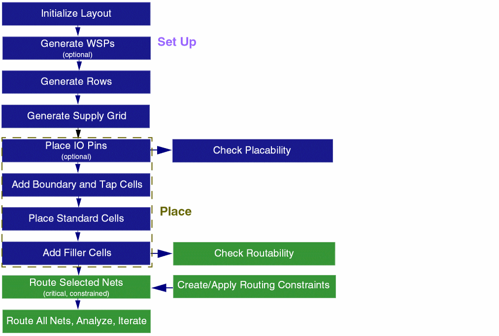

Virtuoso Automated Standard Cell Placement and Routing Flow
The following diagram summarizes the Virtuoso automated standard cell placement and routing flow.

Standard cell placement involves the following steps:
- Initializing the layout: The first step is layout generation, where information about the PR boundary, instances, nets, and pins is generated in the target layout as per the source schematic.
- Setting up the design for placement: In this step, you prepare the design for placement and routing by generating WSPs, rows, and supply grid.
- Placing Standard Cells: Here, you run the automated standard cell placer. This step involves placing IO pins and adding boundary and tap cells before running the placer, and adding filler cells after running the placer.
The following steps summarize the standard cell routing flow.
- Generate Width Spacing Patterns: The first step in the routing technology flow is WSP generation. Information about the shapes on the layer, tracks, and patterns is generated in the design.
- Check Routability: In this step, you select the checks that should run before routing a design.
- Generate Supply Grid: The next step in the flow lets you generate power rails for VDD and GND nets.
- Run Automatic Routing: This step in the flow helps you to route all or selected nets.
- View and Analyze Routing Results: Finally, you can analyze the routing results from a single table using the Routing Results Browser. It shows the number of opens, shorts, wire length, DRC, vias, and so on.
Related Topics
Virtuoso Automated Standard Cell Placement and Routing
Environment Setup for Automated Standard Cell Placement and Routing Flow
Virtuoso Automated Standard Cell Routing
Return to top